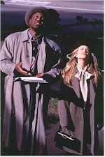
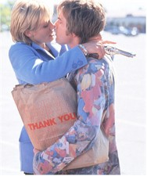

Contents | Features | Reviews | News | Archives | Store |
 |
|
| Movie Credits | Buy It! |
A Life Less Ordinary
Review by Eddie Cockrell
Posted 24 October 1997
| Directed by Danny Boyle Starring
Ewan McGregor, Cameron Diaz, Screenplay by John Hodge |
"Indulge me," urges spoiled, conniving heiress Celine (Cameron Diaz).
"Well, if that's what you want," replies the reluctant hero, custodian-turned-kidnapper Robert (Ewan McGregor).
"That's all I ever want," says Celine tartly.
This exchange, perhaps more than any other, sums up the worldview of A Life Less Ordinary, the frantic, self-conscious and occasionally mean-spirited new movie from director Danny Boyle, producer Andrew MacDonald and screenwriter John Hodge, the three hip kings behind Shallow Grave (1994) and Trainspotting (1996). For their first American studio effort, the three have managed the not-inconsiderable trick of making a very self-indulgent movie in an industry where people labor for years to put a personal stamp on their work. Their right to make such a film in a lowest-common-denominator marketplace is a question best left to the studio bean counters, who will advise those who approve such things based on box office performance. That, in turn, will be based on the ability of audiences to tolerate a wildly uneven, often forced, but occasionally very funny romp through a classic Hollywood genre – screwball comedy – that really doesn't work today as well as it did in a more innocent era of moviemaking.
Beginning with a crisis in Heaven (which looks like an update of the album art for Cheap Trick's "Dream Police") involving new incentives for a pair of panicked angels (Holly Hunter and Delroy Lindo) to get men and women to fall in love, Life then introduces the lucky couple assigned by Chief of Police Gabriel (Dan Hedaya): spoiled rich kid Celine (Diaz), first seen accidentally shooting her fiancé Elliot (Stanley Tucci) in the head; and Robert (McGregor), a whiny dreamer who loses his janitor's job to a robot that looks suspiciously like something George Lucas scrapped early in the Star Wars pre-production period. Introduced when Celine is called into the office of her tightly-wrapped industrialist father (Ian Holm) at the same time Robert bursts in with ill-planned demands, the two flee from the resulting chaos and are thrown together on the road.
So far, so good: these early scenes are bursting with visual and verbal wit, setting the audience up for a loud, fast and funny update of Frank Capra's It Happened One Night (1934) seasoned with liberal doses of Coen-ish irony and bits of the classic 1946 Powell-Pressburger fantasy Stairway to Heaven (MacDonald is Pressburger's grandson). Subsequently, Celine decides that Robert has kidnapped her and after an inept ransom demand from a pay phone in the middle of nowhere they repair to a deserted cabin to decide their next move.
It is about here that Life starts to lose it's way, due in large part to the absurd but jarring violence that the filmmakers subject the pursuing angels to. In fact, that whole subplot make up the weakest sections of the film, as their interplay is forced and lame, and at one point Hunter's character is bounced around on a country road and literally crushed by a pickup truck – only to bounce back with but a few bandages to indicate her injuries (they're angels, so indestructible, get it?).
Sprinkled throughout this mayhem are scenes of loopy beauty, including a funny scene with their wilderness neighbor Tod (Maury Chaykin), a spectacularly successful fantasy karaoke sequence where Robert and Celine sing and dance to Bobby Darin's "Beyond the Sea" amidst the denizens of a backwoods country bar, and the eventual acknowledgement of their mutual love (including an odd but whimsical animated sequence over the closing credits).
The film's modest successes can be credited almost entirely to the engaging presence of the two leads. Diaz is nothing less than terrific, bringing a skewed aplomb to a character who in lesser hands would be almost entirely unsympathetic. McGregor's comic timing and puppydog sincerity prevent Robert from being a complete lout, and there hasn't been a British actor with this distinctive confluence of skills since the early 1970s heyday of Malcolm McDowell (A Clockwork Orange [1971], O Lucky Man! [1973]). The rest of the cast is well into the spirit of the proceedings, with standout comic work coming from Holm, Hedaya, Chaykin and fine stage and screen actress Judith Ivey in a very small role as Celine's mother (cutting appears evident here). Some miscellaneous production information lists Sean Connery in an uncredited cameo as God, but there's no evidence of him in the finished film. Only Hunter and Lindo are at a disadvantage in poorly focused roles.
"What we wanted to do was combine a British sensibility with some of the wonderful things about America – its land, its language, its people," Boyle told Entertainment Weekly by way of explaining the peculiar tone that Life strikes, for the most part successfully. Neither fish nor fowl, it isn't British, exactly, but is far too exaggerated to be mistaken for anything but the most cliched view of rural America. Hodge acknowledges this: "The first draft was set in Scotland," he remembers in the same article, "But the story got so extreme, it just seemed to say, 'Let's go to America.'"
Note to Boyle and company: it's OK to make fun of America and take stuff from classic movies, but do not under any circumstances go around telling people you've done this. First, this strategy won't sell you a single extra ticket, and second, critics will pick up on whatever you steal anyway and might in fact be grateful that you're not arrogant enough to actually acknowledge the influence. As for MacDonald's assertion in the same article that "Trainspotting should have made $35 to $40 million in the U.S. [the total was $17 million]. Why didn't it? I can only blame the audience, the American audience," well, what are moviegoers to make of this? Life isn't a movie, so much as revenge for Trainspotting's poor performance? That's no way to work a crowd.
Decidedly less ordinary than anything else at the multiplex just now, the movie's problems have more to do with the filmmakers' capricious enthusiasm and seemingly unfettered vision than their comic abilities. Given their arrogant posturing, coupled with the withering reviews the film has generated thus far, the deck is stacked against even a decent box office showing. Even the most sympathetic critic and viewer might find it a lot easier to indulge these guys if they didn't give the distinct impression of laughing at them – and everybody else who might wander into this exasperating movie.
Contents | Features | Reviews | News | Archives | Store
Copyright © 1999 by Nitrate Productions, Inc. All Rights Reserved.